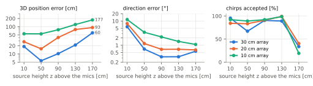
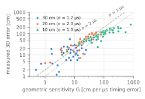
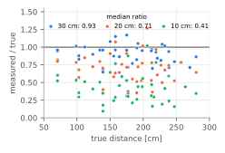
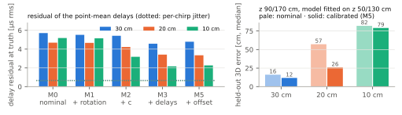

How far can a 4-microphone square array locate a sound?
Distance, height and array-size study of the ESP32 TDOA array (30 / 20 / 10 cm) with system identification · 18 November 2026
In short.
Direction is robust, distance is not. Median direction error 0.6° / 0.8° / 2.3° (30 / 20 / 10 cm side) out to 3 m; 3D position error 18 / 46 / 90 cm. A smaller array loses distance far faster than direction.
The error lies along the ray: the source is found in the right direction but too close (median measured/true distance 0.93 / 0.71 / 0.41).
Geometry predicts the error: 3D error ≈ G × σ. G is the geometric sensitivity (cm per µs); σ ≈ 1–2 µs is an effective timing error, about the same for all three arrays.
That timing error is systematic, not random. Chirp-to-chirp jitter is 0.65 µs, but the delays at a point are off by 4.7–5.7 µs, so averaging more chirps cannot help. A 5-parameter calibration helps partly: on held-out points 16 → 12 cm (30 cm) and 57 → 26 cm (20 cm).
The y axis is a blind plane of a square array, where distance cannot be observed. Sources near the floor (z = 10 cm) lose direction to the floor echo.
1 · Experiment
Hardware and processing. Four MEMS microphones form a square (side 30, then 20, then 10 cm) in a plane 4 cm above the floor. An ESP32 detects each chirp with a matched filter and GCC-PHAT, fits one arrival time per mic from the six pair delays, and localizes on board.
Signal and source. The signal is a linear chirp, 3–12 kHz, 50 ms. It was the best of about 25 candidate signals × 4 levels in the earlier sweeps P1–P4. A phone played it from its left speaker, aimed at the array, at a fixed volume.
Grid. 16 positions lie in the free sector between the +y axis and the x = y diagonal:
the y axis and the diagonal, each at 50–200 cm;
8 in-between points.
Each position was measured at z = 10, 50, 90, 130 and 170 cm above the mic plane: 80 points, 0.5–3.0 m away. The phone displayed the next point and played 20 chirps when its button was pressed.
Data. 254 placements (including redos) with 5115 detected chirps. One placement was excluded because of a known placement mistake.
Analysis. Every chirp was localized again on the laptop from its four arrival times, with the rotation re-fitted on these data (§2, last item). Statistics cover the diagonal and in-between points; the y axis is treated separately.
source height
3D position error [cm]
direction error [°]
chirps accepted [%]
30 cm
20 cm
10 cm
30 cm
20 cm
10 cm
30 cm
20 cm
10 cm
z = 10 cm (grazing)
19
28
55
5.8
7.9
11.5
95
84
92
z = 50–90 cm
8
33
72
0.62
0.79
2.41
78
87
91
z = 130 cm
21
79
120
0.34
0.68
1.44
89
99
99
z = 170 cm (steep)
60
93
177
0.57
0.64
1.07
34
40
19
all heights
18
46
90
0.61
0.77
2.32
75
80
78
Table 1. Median over points of each point's mean 3D error and median direction error (diagonal and in-between points). Success = accepted chirps / 20 played. Fraunhofer distance 2D²/λ at 7.5 kHz (D = side): 394 / 175 / 44 cm.

Figure 1. Capability versus source height. Position error grows with height and with a smaller array. Direction is best at mid heights. Success collapses only at 170 cm.
2 · Findings
Direction survives; distance needs a large array
Direction error does not grow with distance in the measured range and roughly follows 1/side (0.6° → 0.8° → 2.3°).
Distance degrades much faster, because a planar array reads range from the slight curvature of the wavefront:
30 cm: about 8 cm 3D error at z = 50–90 cm, and a usable 3D position up to about 2.3 m.
10 cm: never better than 20 cm; its error is comparable to the distance itself.
With limits of 20 cm / 3° / 50 % success, the points split into 3D position / direction only / neither:
30 cm: 21 / 12 / 26;
20 cm: 8 / 30 / 22;
10 cm: 0 / 28 / 32.
Every point lies inside the 30 cm array's 394 cm Fraunhofer distance, so the far field is not its limit. Elevation and the blind plane are.
The error is a shortening along the ray
For every point and array, the chirps lie on the true direction but closer to the array (Fig. 3). The median signed distance error is −11, −45 and −89 cm. The 1–2 µs delay errors corrupt the small curvature term that carries the range, and here they systematically mimic a nearer source. The cause of the sign is not identified yet; candidates are floor and ceiling echoes, speaker directivity and ground-truth placement.
Blind plane, floor echo, steep sources
Blind plane. On the y axis (x = 0) a square array has only one independent delay across x, so range is unobservable. Distance errors are 300–740 cm (the solver runs to its bound), while direction stays at 0.6 / 0.7 / 1.8°. Every square has two such planes (x = 0, y = 0).
Floor echo. At z = 10 cm the floor echo arrives almost with the direct sound, and direction error rises to 6–12°.
Steep sources. At z = 170 cm the geometric sensitivity G reaches 20–80 cm/µs (30 cm) and over 100 cm/µs (10 cm).
Failures are set by the place, not the array
The far corners and z = 170 cm fail with every array. Either the matched-filter quality sits at its 0.2 limit, or the six delays disagree by 15–350 µs (the limit is 10 µs), which points to reflections. The level was about −40 dB everywhere, so loudness is not the cause.
Rejected chirps still carry the direction: at failing points the median direction error of all detected chirps is 2.5° / 4.0° / 7.8°.
A calibration error caught by the data
The 30 and 20 cm runs used a +2.13° array rotation, fitted earlier from four hand-measured positions. Re-fitting it on the series (about 1000 chirps per array at known points) gave −0.15°, −0.05° and −0.15°.
With +2.13°, the 30 cm delay residual was 21.7 µs instead of 5.5 µs, and every direction carried a 2° bias.
After the re-fit, the direction floor fell from 1.8° to 0.3–0.6°.
Four points could not identify even one parameter; a grid could.

Figure 2. Measured 3D error against the distance uncertainty the geometry predicts per µs of timing error (CRLB, independent per-mic errors). All three arrays fall along one band, σ ≈ 1–2 µs.

Figure 3. Measured / true distance (z ≥ 50 cm): a systematic shortening along the ray, strongest for the small arrays.
3 · How the system was identified
Measurement model. A chirp from a known position s reaches mic i at
ti = |s − mi| / c + δi + ei
The terms:
mi: mic position (nominal square, possibly rotated or offset);
c: speed of sound;
δi: constant per-mic delay;
ei: everything else.
Only the six pair delays are observed. A known grid and a known, fixed excitation make this an input–output identification. The procedure:
Separate random from systematic. The 20 repeated chirps per point give the random jitter (scatter around the point mean). The point-mean delays minus the model at the true position give the systematic part.
Fit nested models by least squares on the point-mean delays at z ≥ 50 cm (z = 10 is left out because of the floor echo): M0 nominal; M1 + rotation; M2 + c; M3 + three per-mic delays; M5 per-mic delays + an x/y offset of the array centre (5 parameters).
Validate on held-out data: fit on z = 50 and 130 cm, test on z = 90 and 170 cm.
Propagate to accuracy. The Jacobian of the delays (CRLB) gives each point's geometric sensitivity G. The measured error divided by G is the effective timing error σ (Fig. 2).

Figure 4. Left: residual of the point-mean delays at the true positions per model (dotted: per-chirp random jitter). Right: median 3D error on held-out heights, nominal vs calibrated (M5), diagonal and in-between points.
identified quantity (accepted chirps, z ≥ 50 cm, about 1000 chirps / 54 points per array)
30 cm
20 cm
10 cm
random jitter per chirp (robust; 10 cm plain rms 4.4 µs because of outlier chirps)
0.69 µs
0.64 µs
0.64 µs
systematic residual, nominal model M0 → calibrated M5
5.7 → 4.8 µs
4.7 → 3.3 µs
5.2 → 2.3 µs
rotation (M1) / speed of sound (M2; 344.0 m/s assumed at 21 °C)
−0.16° / 343.3
−0.08° / 345.9
−0.18° / 351.9
array centre offset (M5)
(−0.6, −0.2) cm
(−1.3, −0.2) cm
(−0.8, −1.2) cm
held-out 3D error, nominal → M5
16 → 12 cm
57 → 26 cm
82 → 79 cm
effective timing error σ = 3D error / G
1.2 µs
2.0 µs
1.0 µs
Table 2. Identification results per array.
What this identifies.
Electronics and DSP are consistent: 0.65 µs jitter (1/35 of a sample) for every array size.
Global geometry is right: rotation ≈ 0°, and c is within 1–2 % of the 21 °C value.
A 5-parameter calibration helps partly. Per-mic delays plus an array offset of about 1 cm (plausible for hand placement) explain 15–55 % of the systematic residual, and the fit carries over to unseen heights for 30 and 20 cm. The fitted per-mic delays change between layouts on the same electronics, so they absorb placement rather than hardware.
The remaining 2–4.5 µs depends on position. No global parameter removes it. The ground truth alone can explain this much: a speaker placed 0.5 cm off at 1 m (0.3°) shifts the delay across a 30 cm baseline by 4.4 µs. Echoes and speaker directivity are the other candidates.
The resulting error model predicts accuracy anywhere and for any array size: 3D error ≈ G(s, side) × σ, with σ ≈ 1–2 µs. G grows roughly as 1/side² and with elevation, and is infinite in the blind planes.
4 · Consequences
Array choice. Use ≥ 30 cm for 3D positions within about 2 m. A 10 cm array is a direction sensor (about 2°) with only a rough range.
Geometry. Break the square's symmetry and add one mic out of the plane. This removes the blind planes and helps with steep sources.
Calibration. Calibrate each installation with M5 from about 20 known points spread in angle.
Output. Report direction with a confidence derived from G, even when the position check fails.
Mounting and ground truth. Raise the array off the floor. Measure the ground-truth accuracy (placement jig) before modelling the range bias further.
Data and code (repository paths): raw chirps host/bench_results/series/distance_v2/ · interactive analysis docs/dashboard/index.html · identification host/identify_system.py · figures host/report_figures.py · full record docs/experiment_log.md